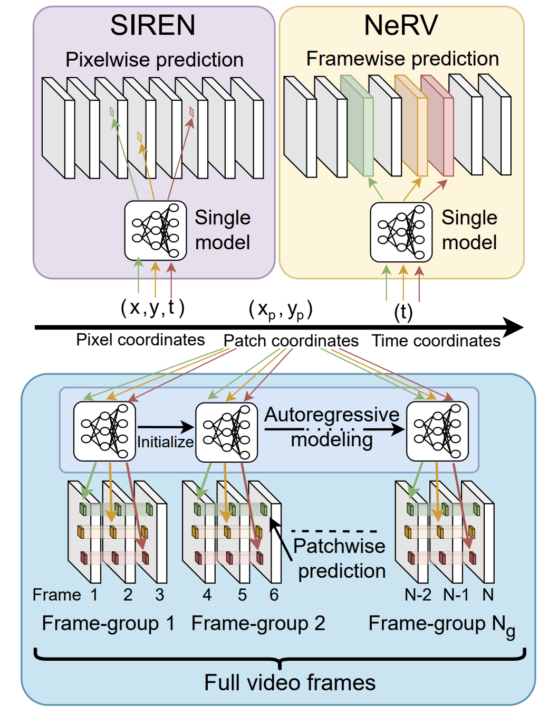
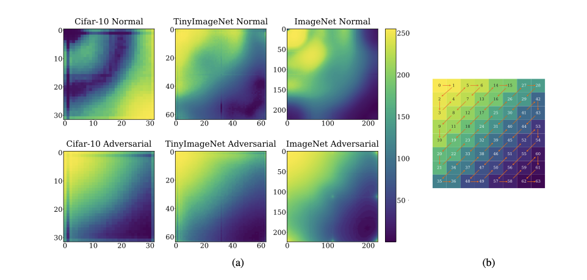
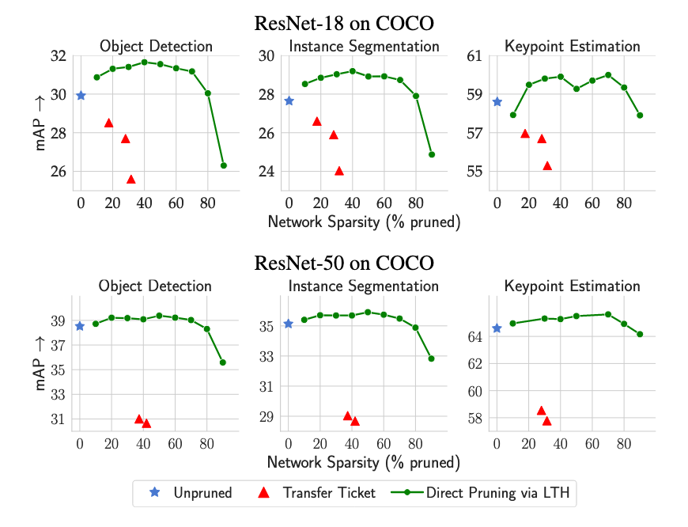
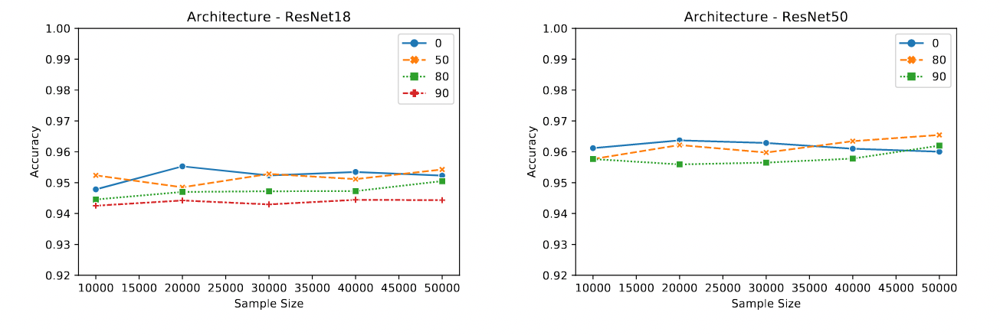
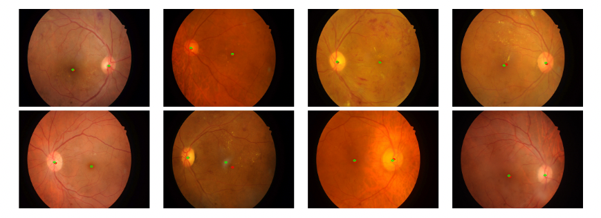
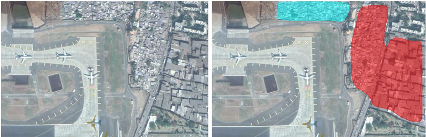
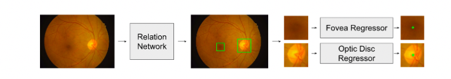
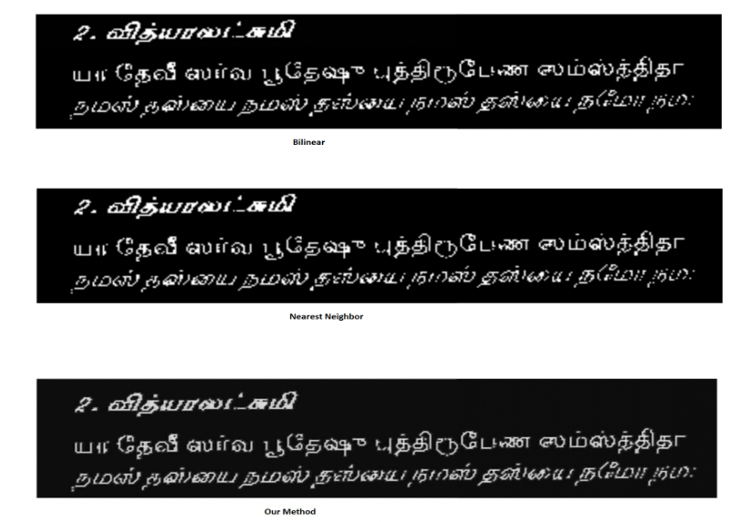

|
Shishira R Maiya
I am a PhD Student at University of Maryland, under Prof Abhinav Shrivastava
where I work on computer vision and machine learning. Prior to this I earned my Masters in Computer Science from University of Maryland as well.
Previously, I finished my undergrad from MSRIT Bangalore. My first brush with machine learning
was as an intern at Stride where I worked on text classification and other NLP tasks.
I later went on to work under Prof AG Ramakrishnan
on super resolution of document images at MILE lab at IISc.
I continued working in related domains with an internship at Hyperverge under
Adarsh Tadimari,
where I worked on scene text recognition and OCR.
After my undergrad, I worked as a research assistant at RBCCPS at IISc, under
Prof Raghu Krishnapuram. Here, I worked on a wide variety of problems ranging from multi-camera multi-object tracking, segmentation and
vision guidance for drones. During my Masters, I had the opportunity of working as a research intern for SIML team at Apple,
under Rui Shen.
I recently worked as a research intern at Snap Inc, where I worked on developing an efficient and scalable
implicit neural representation for videos.
Currently my research spans model, data compression techniques and understanding adversarial examples for vision tasks.
Email /
CV /
Google Scholar /
Github /
Substack
|
|
|

|
NIRVANA: Neural Implicit Representations of Videos with Adaptive Networks and Autoregressive Patch-wise Modeling
Shishira R Maiya*,
Sharath Girish* ,
Max Ehrlich ,
Hanyu Wang,
Kwot Sin Lee,
Patrick Poirson
Pengxiang Wu
Chen Wang,
Abhinav Shrivastava
IEEE Conference on Computer Vision and Pattern Recognition (CVPR)
, 2023
An efficient and scalable INR for Videos!
Project Page |
Paper
|
|

|
A Frequency Perspective of Adversarial Robustness
Shishira R Maiya,
Max Ehrlich ,
Vatsal Agarwal,
Ser-Nam Lim,
Tom Goldstein,
Abhinav Shrivastava
Under Review , 2021
A study of adversarial robustness from the perspective of frequency analysis.
Paper
|
|

|
The Lottery Ticket Hypothesis for Object Recognition
Sharath Girish* ,
Shishira R Maiya*,
Kamal Gupta ,
Hao Chen,
Larry Davis,
Abhinav Shrivastava
IEEE Conference on Computer Vision and Pattern Recognition (CVPR) , 2021
Explored the nuances of applying the Lottery ticket Hypothesis for Object recognition models.
Project Page | Paper | Code
|
|

|
Membership Inference Attacks on Lottery Ticket Networks
Aadesh Bagmar* ,
Shishira R Maiya*,
Shruti Bidwalkar ,
Amol Deshpande
International Conference on Machine Learning (ICML) workshop: A Blessing in Disguise:
The Prospects and Perils of Adversarial Machine Learning , 2021
Are lottery ticket networks vulnerable to Membership inference attacks due to their sparse nature?
Paper | Code
|
|

|
Rethinking Retinal Landmark Localization As Pose Estimation: Naive Single Stacked Network For Optic Disk And Fovea Detection
Shishira R Maiya*,
Puneet Mathur*
IEEE International Conference on Acoustics, Speech and Signal Processing (ICASSP) , 2020
Can we use pose models for medical imaging problems ?
Paper
|
|

|
Slum Segmentation and Change Detection: A Deep Learning Approach
Shishira R Maiya*,
Sudharshan Chandra Babu*
Neural Information Processing Systems (NeurIPS): ML4D workshop , 2018
Detecting and tracking growth of slums in the city of Mumbai using deep learning.
Project Page | Paper | Code
|
|

|
Relation Networks for Optic Disc and Fovea Localization in Retinal Images
Sudharshan Chandra Babu* ,
Shishira R Maiya*
Neural Information Processing Systems (NeurIPS): ML4Health workshop , 2018
Utilizing context for detection in medical imaging.
Paper
|
|

|
A new approach for upscaling document images for improving their quality
Rama Krishna Pandey,
Shishira R Maiya,
A G Ramakrishnan
IEEE India Conference (INDICON) , 2017
Method to upsample Document Images.
Paper
|
|
{kind=link}